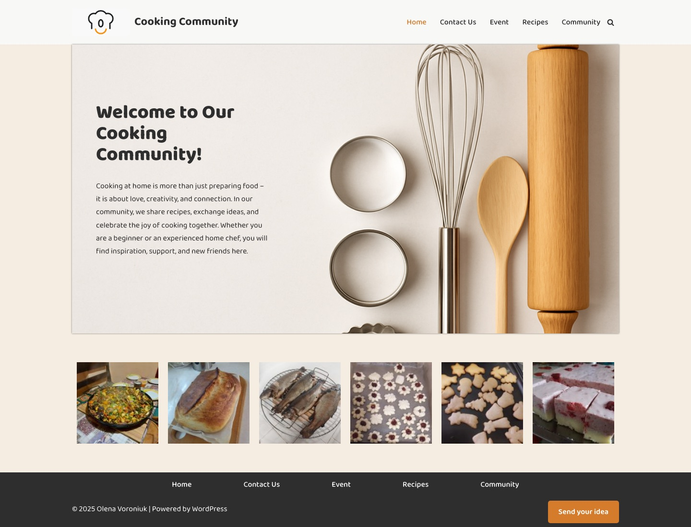
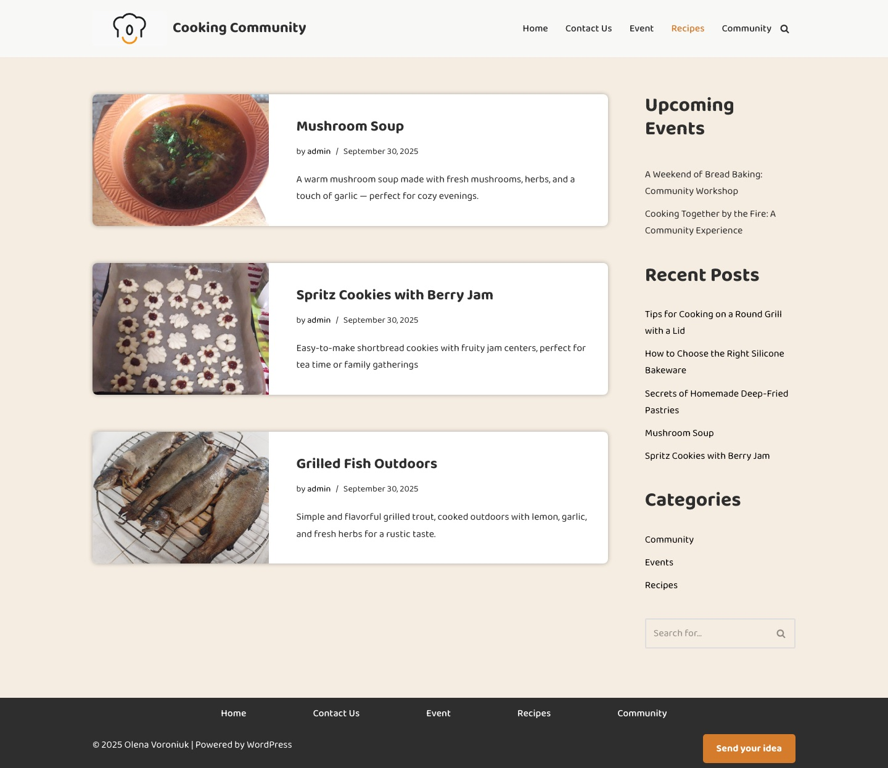
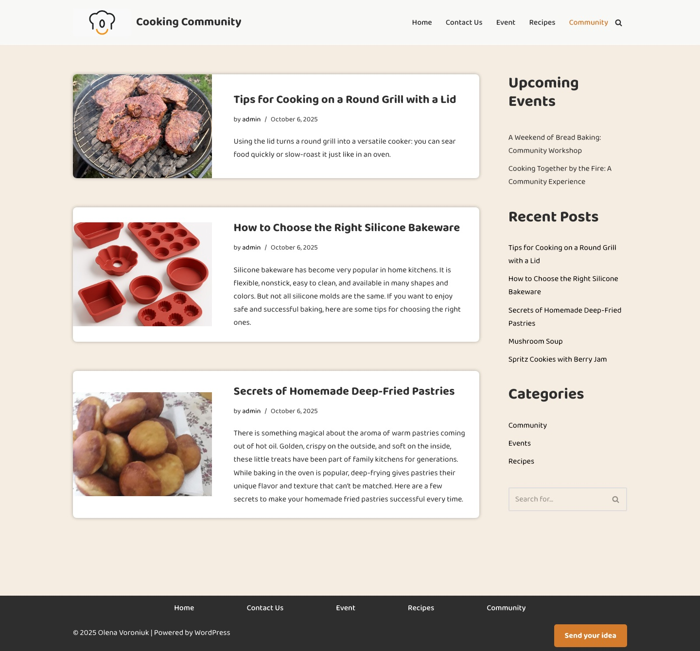
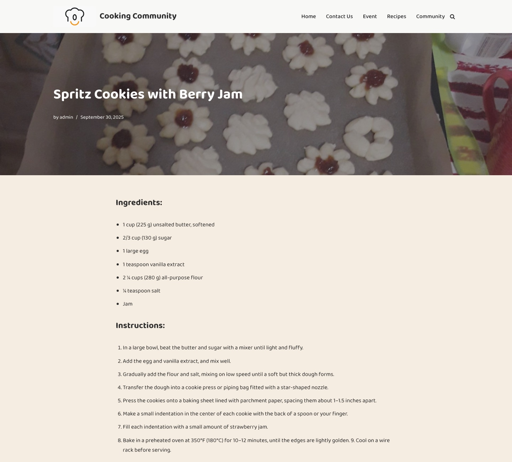
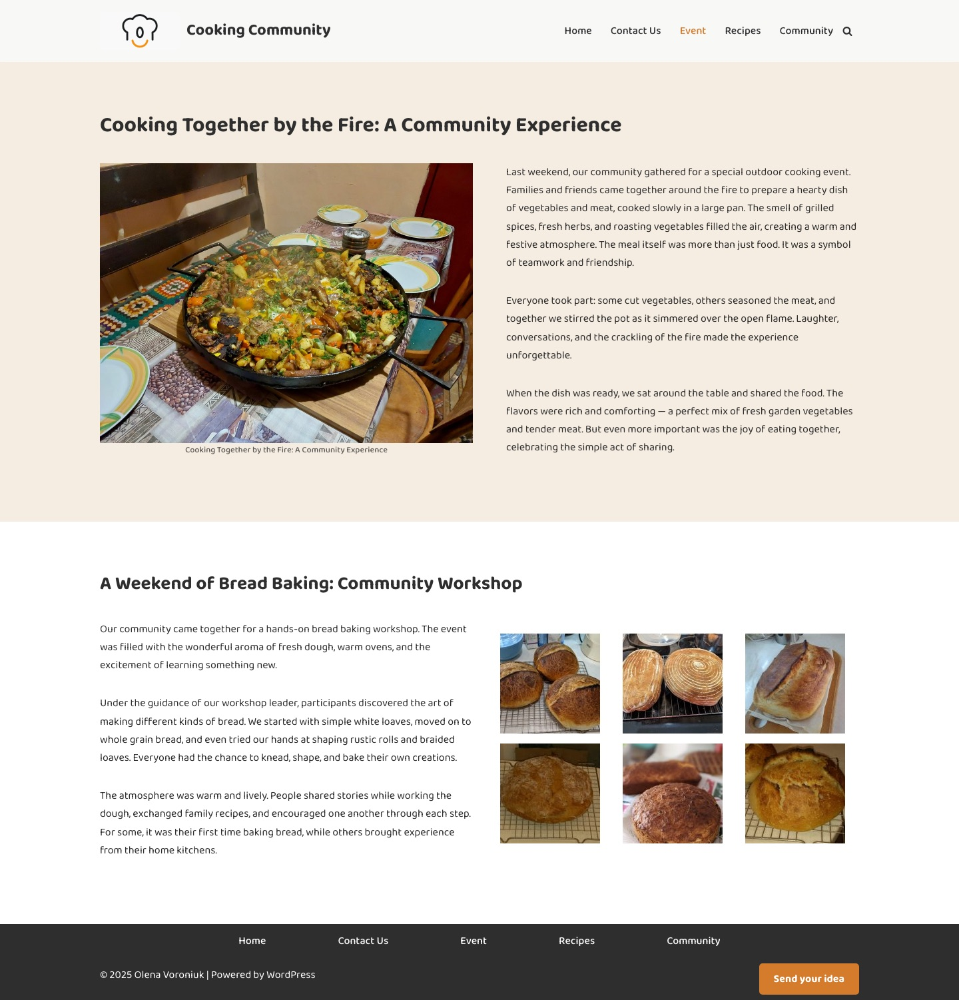
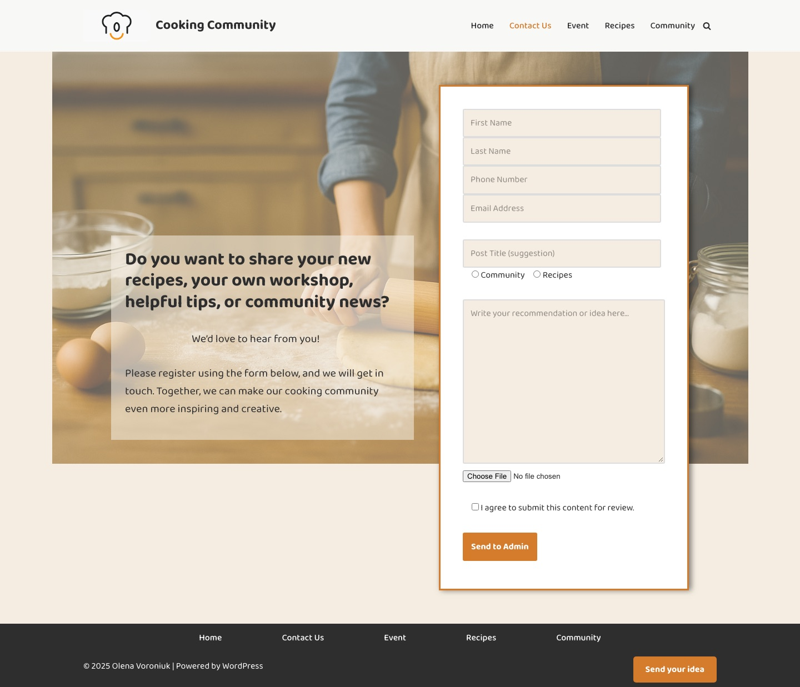

Cooking Community
A WordPress site for home cooks: recipes, cooking tips, community events and a form where members suggest their own posts. I set it up so an owner with no coding skills can run it from the WordPress dashboard.
The site runs on my local WordPress install, so there is no public link. The screenshots below are from that install.

Five pages, one clear job each
Home welcomes people and shows real dishes from the community. Recipes and Community collect posts by category, Event tells the story of past get-togethers, and Contact Us lets members send their own ideas. The same menu sits in the header and the footer, and a “Send your idea” button is on every page.
Recipes and tips, sorted by category
Every post is a card with a photo, title, date and a short summary. The sidebar lists upcoming events, recent posts and categories, and has a search box, so readers can move around without going back to the menu.


A recipe page that is easy to cook from
The dish photo sits behind the title, then the ingredients come as a list and the steps as a numbered list, so a cook can keep their place. Readers can leave a comment under each recipe.

Events told as stories
Each event gets its own block with photos and a short story: a dinner cooked over a fire, a weekend bread-baking workshop.

Members suggest posts, the admin decides
The Contact Us form asks for a name, contact details, a post title, a category (Community or Recipes), the idea itself and an optional photo. A checkbox confirms the content is sent for review, and the button says exactly where it goes: “Send to Admin”.

Built for the person who runs it
A community site lives only if someone keeps posting. So the site is set up for an owner who knows the WordPress dashboard but not code: every regular task is a few clicks, and none of them touches the layout.
Publish a recipe or tip
Posts → Add New. Write the ingredients as a list and the steps as a numbered list, add a featured image and pick the Recipes or Community category. The post appears on its page and in Recent Posts by itself.
Review members’ ideas
Ideas from the “Send your idea” form go to the admin for review. Nothing goes live on its own: the admin turns a good idea into a post and publishes it.
Announce an event
Add a post in the Events category to show it under Upcoming Events in the sidebar. Photos and the story go on the Event page.
Moderate comments
New comments under recipes wait in Comments, where the admin can approve, reply to or remove them.
Change the home gallery
The row of dishes on the home page is a Modula gallery: add or swap photos without opening the page layout.
Edit a page safely
Pages are built in Elementor, so text and photos are edited visually. The header and footer are shared templates: change the menu once and it updates on every page.
Visitors also get a cookie banner (CookieAdmin) where they can accept, reject or choose which cookies to allow.